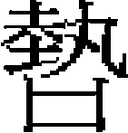

木華黎下速渾察 乃燕 碩德 别里哥帖木兒 相威 撒蠻 脱脱 朵兒只 朵兒直班 乃蠻台 帶孫 忽圖魯 塔塔兒台
速渾察，從太宗伐金，又從皇子闊出伐宋，攻棗陽，入郢州。太宗十一年，襲兄爵，駐於桓州西阿兒查秃之地，總燕京行省蒙古、漢軍。凡他行省事，必先取決可否，而後上聞。賞罰明信，人莫敢犯。太宗嘗遣使至其部，見紀綱整肅，還朝具以上聞。帝曰：「真木華黎家兒也。」速渾察嚴重有威，諸王使者入見，皆倉遽失辭。左右或請待以寬恕，速渾察曰：「爾言誠是也，然爲政寬猛，各視乎時。今中原初附，民心未安，萬一守土吏弛縱，反側復生，悔之何及？」未幾卒。延祐三年，贈宣忠同德翊運功臣，追封東平郡王，諡忠宣，餘官如祖父。又進封魯國王，改諡忠烈。
四子：曰忽林池，曰乃燕，曰相威，曰撒蠻。
憲宗以速渾察仲子乃燕好學，有賢名，命襲爵國王。辭曰：「臣有兄忽林池當襲。」憲宗曰：「汝兄柔弱，恐不勝任，且汝父亦以仲子襲爵。」忽林池亦固讓。乃燕頓首涕泣，力辭，不得命，則曰：「王爵必不敢受，上不以臣爲不肖，請代兄行軍國之事。」於是忽林池襲國王，事無巨細，必與乃燕謀，剖決精當，事無壅滯。
世祖在潛邸，常與論事。乃燕援據典要，世祖嘉之，因賜號曰薛禪。乃燕小心謹畏，每誨羣從子弟曰：「先王百戰，以啟藩封，子孫何功德而坐享之？常恐不堪福禄，墮先王之業，矧驕佚乎？汝曹戒之。」及卒，世祖悲悼。至元八年，贈中奉大夫、遼東等處行中書省參知政事、護軍，追封魯郡公。
二子：曰碩德，曰伯顔察兒。
碩德，中統初自西臺入宿衛，奏對稱旨。世祖謂左右曰：「碩德通敏如此，乃燕有子矣。」命典朝儀。凡宗室外戚之訟弗決者，使讞之，咸服其公允。帝嘗問安童：「卿族人可繼卿者爲誰？」對曰：「性行淳雅，智辯明哲，無踰碩德。」帝韙之。會初設通政院，命以嘉議大夫、同知院事。
碩德奏：「遼東韓拙、吉烈滅二部數入寇，宜遣近臣諭之。」帝難其人，執政請即使碩德往。召問之，對曰：「先臣從太祖定天下，不避萬死，以身殉國。陛下不以臣年少愚戇，俾效犬馬之力，臣請行。」帝悦，賜御鞍對衣以遣之。女真舊土有水達達萬户府，兵、民乏食，請賑，有司格其事不下，訴於碩德。命覈有司之侵匿者，給之，全活甚衆。征東元帥府道沮洳，夏行舟，冬以犬駕杷駛冰上，碩德相山川形勢，除道以通往來，人便之。韓拙、吉烈滅二部居海島，碩德檄諸萬户，據其險要，遣人至島中招諭之。於是脅從者悉降，僅戮賊首數人，餘無所問。帝大悦，賜玉笠頂、連珠束帶。
未幾，西北諸王有異志，帝召諭碩德曰：「卿雖勞，然非卿無可爲朕使者。」碩德頓首受命。及至，宣布太祖聖訓及朝廷之德意，諸王皆嘆服曰：「真天使也！」復命，奏西事甚悉。帝謂左右曰：「汝輩如出使，當以此人爲法。」賜珠質孫衣以旌之。俄以疾卒。贈推忠宣惠寧遠功臣、嶺北行省中書右丞，追封魯郡公，諡忠敏。子别里哥帖木兒。
别里哥帖木兒，早孤，其母弘吉剌氏以國書授之。性至孝，母疾，成宗遣尚醫診視，或言有刲股療疾者，别里哥帖木兒聞之，即刲肉以進，疾遂愈。
仁宗即位，擢僉通政院事。帝嘗問周文王之父子及周之所以興，别里哥帖木兒奏對甚詳。帝賜以卮酒，獎諭之曰：「卿，蒙古人中儒者也。」延祐四年卒，年三十三，贈河南行省中書平章政事，追封魯國公。子朵爾直班［一］。
相威，性厚重，喜延士大夫，聽其讀書，至忠臣、良將，必撫案稱快。
至元十一年，從伐宋。由正陽取安豐，渡江東下，會伯顔兵於潤州，分三道並進。相威將左軍，申明約束，江陰、華亭、澉浦、上海諸城，悉望風款附。又與阿朮合兵攻揚州。
十三年，入覲。時海都有異志，授相威征西都元帥，使鎮西邊。
十四年，置行御史臺於揚州，召拜行臺御史大夫。上言：「陛下以臣爲耳目，臣以監察御史、按察使爲耳目。非其人，則臣之耳目先自閉塞，下情何以上達？」帝然之，命慎選監察御史、按察使。每除目至，必集臺中僚屬議可否，不協公論者即罷去。相威又奏便民十五事，如：並行省，汰冗官，鈐鎮兵，業流民，録故官，禁饋遺，浙鹽運司隸於行省，行大司農營田司並於宣慰司，理訟分南北，公田召佃減租，革亡宋公吏之弊。皆當時要政，並見施行。先是，行省平章阿理伯言：「有罪者，乞與臺臣同問。」相威奏：「行省斷罪，以意出入，行臺何由舉正？宜從行省問訖，然後體察爲宜。」從之。浙東盜起，宣慰使昔里伯之弟阿速與王權府等縱兵俘掠平民，相威遣御史商琥閲治，得釋者以數千計。奏執昔里伯，治其罪。尋又敕相威檢覈阿里海牙、忽都帖木兒等俘丁三萬二千餘人，盡釋之。
十六年，入覲。會河南行省左丞崔斌劾平章阿合馬不法事，帝使相威與樞密副使博羅至大都鞫之。阿合馬稱疾不出。博羅欲還，相威厲聲曰：「吾奉旨來，若敢抗旨耶？」令輿疾對簿，首責數事，皆引伏。既而詔釋阿合馬不問，仍褒諭相威，使還行臺。
大軍征日本失利，帝震怒，命阿塔海依舊爲征東行省丞相，議再舉，廷臣無敢諫者。相威奏言：「倭不奉職貢，可伐而不可恕，可緩而不可急。向者師行期迫，戰艦不堅，前車已覆，後宜改轍。爲今之計，惟有修戰艦，練士卒，整兵耀武，使彼聞之，亟圖禦備。需以歲月，彼必怠玩，出其不意，乘風疾往，可一舉而平也。」帝意釋，兵遂不出。
二十年，以疾請入覲，進翻譯《資治通鑑》，帝賜皇太子，俾經筵進講。未幾，拜江淮行省左丞相。行至蠡州而卒，年四十有四。
子牙老瓦丁，行臺御史大夫。孫脱歡，集賢大學士。
撒蠻，自襁褓時世祖撫育之如己子。同舟濟江，慮其有失，繫之御榻。年十餘，侍左右。世祖嘗詔之曰：「男女異路，古制也，况掖庭乎？禮不可廢，汝其司之。」既而近臣孛羅銜命出，行失次，撒蠻執而拘之。世祖怪孛羅久不復命，詢得其故，命釋之。撒蠻曰：「令自陛下出，陛下自違之，他日何以責臣下？」世祖謝之，由是有大任之意。會以疾卒，年僅十七。子脱脱。
脱脱，少孤，其母孛羅海教之。稍長，直宿衛，復受教於世祖，尤以嗜酒爲戒。既冠，儀觀甚偉。
從駕征乃顔。王師既陳，旌旗蔽野。鼓未作，諜報賊至。脱脱即環甲，帥家僮數十人馳突而前，賊衆披靡。帝駐驆山顛，望見之，亟遣使召還，勞之曰：「卿勿輕進，此寇易禽也。」視其刀已折，馬亦中箭矣。顧謂近臣曰：「撒蠻不幸早死，脱脱幼，朕撫而教之，常恐其不成立。今若此，撒蠻有子矣。」親解佩刀及御馬賜之。仍從皇孫鐵穆耳討乃顔餘黨哈丹，馬陷於淖，哈丹兵卻而復進，脱脱弟阿剌瓦丁揮戈擊賊，脱脱乃免。
自以受帝命戒酒，而未能遽絶，及宫車宴駕，即屏杯勺，命家人勿以酒進。成宗聞而善之，曰：「札剌兒氏如脱脱者無幾，真可大用也。」加資德大夫，由宿衛長出爲上都留守。入爲通政院使、虎賁衛親軍都指揮使。
大德三年，朝議江浙地大人衆，非世臣有重望者不足以鎮之。進榮禄大夫，拜江浙等處行中書省平章政事。瀕行，命中書祖道都門外。始至，嚴飭左右，咨訪掾屬。時朱清、張瑄所行多不法，慮事發覺，預以黄金五十兩、珠三囊交驩脱脱。脱脱大怒，繫其使以聞。成宗悦，賜黄金五十兩。十一年，卒於位，年四十四。子朵兒只。
朵兒只，生一歲而孤。稍長，事母至孝，喜讀書。至治二年，授中奉大夫、集賢學士。時年未及冠，同官如郭貫、趙世延、鄧文原諸老宿皆重之。
天曆元年，朵羅台國王以起兵應上都，爲文宗所殺。二年，詔以朵兒只襲國王。後至元四年，朵羅台弟乃蠻台謂國王己所當襲，愬於朝。丞相伯顔妻欲得朵兒只大珠環，價直萬六千錠。朵兒只不與，慨然曰：「王位我祖宗所傳，不宜從人求買。」於是乃蠻台以賂得爲國王，而除朵兒只遼陽行省左丞相。
六年，遷河南行省。先是，河南盜殺行省官，以詿誤逮繫者數百人。朵兒只至，知其冤，欲釋之。而平章政事納麟乃元問官，執不從，又劾朵兒只庇罪人。朵兒只聞之，不與辨。
至正四年，遷江浙行省左丞相。汀州寇發，朵兒只遣將士招捕之，威信所及，數月即平。賜九龍衣、上尊酒。居二年，境内宴然。杭人請建生祠，如前丞相故事，朵兒只辭之曰：「昔我父爲平章，我實生於此地，宜爾父老有愛於我。然今天下承平，我叨居相位，唯知謹守法度，不辱先人足矣，何用虚名爲？」
七年，召拜御史大夫。秋，拜中書左丞相。冬，遷右丞相、監修國史。而太平爲左丞相。郯王産没官，朵兒只使掾史簿録之。明日，掾史復命。韓嘉訥爲平章政事，不知出丞相命，變色叱之曰：「公事宜自下而上，何竟白丞相？」令客省使扶之出。朵兒只不爲動，人咸服其量。九年，罷相，復爲國王，就國遼陽。
十四年，詔脱脱總兵南討。中書參議龔伯璲建言：「宜分遣宗王及異姓王俱出軍。」吴王朵兒赤厚賂伯璲，獲免。朵兒只獨曰：「吾國家世臣，天下有事，正效命之秋，豈暇與小人通賄賂哉？」即率所部，聽脱脱節制。脱脱遣朵兒只攻六合，拔之。既而詔削脱脱爵，罷其兵權。朵兒只以本部兵守揚州。十五年卒於軍，年五十二。
初，朵兒只爲集賢學士，從丞相拜住在上都。南坡之變，拜住遇害。鐵失、赤斤鐵木兒等並欲殺朵兒只，其從子朵兒直班方八歲，走詣怯薛官失都兒求免，故朵兒只得免於難。朵兒只爲相，務持大體，而太平則兼理庶務，趨附者衆。朵兒只處之淡然，中外皆號爲賢相云。
二子：朵兒帖木兒，翰林學士；俺木哥失里，襲國王。
朵兒直班，字惟中。父别理哥帖木兒。朵兒直班甫晬而孤，育於從祖母。拜住，從父也，請於仁宗，降璽書護其家。稍長，好讀書。年十四，入見文宗，適將幸上都，親閲御衣，命録於簿，顧左右無能書漢字者，朵兒直班引筆書之。文宗喜曰：「世臣之家乃能知學，豈易得哉！」命爲尚衣奉御，尋授工部郎中。
元統元年，擢監察御史。首上疏，請親祀宗廟，赦命不宜數。又陳時政五事：一曰：「太史言三月癸卯望月食既，四月戊午朔，日又食。皇上宜奮乾綱，修刑政，疏遠邪佞，顓任忠良，庶可消弭災變。」二曰：「親祀郊廟。」三曰：「博選勳舊世臣之子，端謹正直者，前後輔導，使嬉戲之事不接於目，俚俗之言不及於耳，則聖德日新。」四曰：「公賞罰，則民心服。」五曰：「弭盜賊，振饑民。」又條陳九事上之。一曰：「比日倖門漸啟，刑罰漸差，無功者覬覦希賞，有罪者僥倖求免。恐刑政漸隳，紀綱漸紊，勞臣何以示勸，姦臣無所警懼。」二曰：「天下之財皆出於民，民竭其力以佐公上，而用猶不足，則嗟怨之氣上干陰陽之和，水旱災變所由生也。宜顓命中書省官二員督責户部詳定减省，罷不急之工役，止無名之賞賜。」三曰：「禁中常作佛事，權宜停止。」四曰：「官府日增，選法愈敝，宜省冗員。」五曰：「均公田。」六曰：「鑄錢幣。」七曰：「罷山東田賦總管府。」八曰：「蠲河南自實田糧。」九曰：「禁取姬妾於海外。」
正月元日，朝賀大明殿，朵兒直班當糾正班次，即上言：「百官踰越班制者，宜同失儀論，以懲不恪。」先是，教坊官位在百官後，御史大夫撒迪傳旨使入正班，朵兒直班執不可。撒迪曰：「御史不奉詔耶？」朵兒直班曰：「事不可行，大夫覆奏可也。」西僧爲佛事内廷，醉酒失火，朵兒直班劾其不守戒律，延燒宫殿。撒迪傳旨免其罪，朵兒直班又執不可，一日間傳旨者八，乃已。
丞相伯顔、御史大夫唐其勢二家奴怙勢爲民害，朵兒直班巡歷至漷州，悉捕其人致於法，民大悦。及還，唐其勢怒曰：「御史不禮我已甚，辱我家人，我何面目見人耶？」答曰：「朵兒直班知奉法，他不知也。」唐其勢從子馬馬沙爲欽察親軍指揮使，恣横不法，朵兒直班劾奏之。馬馬沙怒，欲使其黨刺殺朵兒直班，會唐其勢伏誅，事乃已。遷太府監，改奎章閣學士院供奉學士，進承制學士，皆兼經筵官，又遷侍書學士、同知經筵事。朵兒直班年甫弱冠，又世家子，獨以經術侍帝左右，世以爲盛事。
至正元年，罷學士院，除翰林學士，進資善大夫。於是經筵亦歸翰林，仍命朵兒直班知經筵事。時巙巙以翰林學士承旨直經筵，在上前敷陳經義，朵兒直班則爲翻譯，曲盡其意，多所啟沃，禁中語秘不傳。俄遷大宗正府也可札魯火赤，讞獄，引諭律令，曲當事情。有同僚年老者，嘆曰：「吾居是官四十年，見公論事，殆神人也。」宗王有殺其大母者，朵兒直班與同僚拔實力請於朝正其罪，時相難之。出爲淮東肅政廉訪使，遷江南行臺治書侍御史，未行，又遷江西行省左丞，以疾不赴，起爲資正院使。
五年，拜中書參知政事、同知經筵事，提調宣文閣。纂集《至正條格》，朵兒直班謂是書上有祖宗制誥，安得獨稱今日年號？又律中條格乃其一門耳，安獨以爲書名？時相不能從，惟除制誥而已。有以善音樂得幸者，敕用爲崇文監丞。朵兒直班它擬一人以聞。帝怒曰：「選法盡由中書省耶？」朵兒直班頓首曰：「用倖人居清選，臣恐後世議陛下。今選它人，臣之罪也，省臣無與焉。」帝悦，遷右丞。尋拜御史中丞。監察御史劾奏别兒怯不花，章甫上，黜御史大夫懿憐真班爲江浙行省平章政事。朵兒直班曰：「若此，則臺綱安在？」乃再上章劾奏，並留懿憐真班，不允。臺臣皆上印綬辭職。帝諭朵兒直班曰：「汝毋辭。」對曰：「憲綱隳矣，臣安得獨留？」帝爲之出涕。朵兒直班即杜門待罪。
尋出爲遼陽行省平章政事，階榮禄大夫。至官，詢民疾苦，知米粟、羊豕、薪炭等皆鄉民販負入城，貴室僮奴、官府隸卒争强賈之，僅酬其半直。又其俗編柳爲斗，大小不一，豪賈猾儈得以高下其手，民咸病之。即飭有司厲防禁，齊稱量，諸物畢集而價自平。又存恤孤寡，平準錢法，清銓選，汰胥吏，慎句稽，興廢墜，巨細畢舉。召爲太常禮儀院使，俄遷中政使，又遷資正使。
會盜起河南，帝憂之。十一年，拜中書平章政事，階光禄大夫。首言：「治國之道，綱常爲重。前西臺御史張桓伏節死義，不污於寇，宜首旌之，以勸來者。」又言：「宜守荆襄、湖廣以絶後患。」又數論：「祖宗用兵，不專於殺人。今倡亂者止數人，乃盡坐中華之民爲畔逆，豈足以服人心？」其言頗迕丞相脱脱意。時脱脱倚信左司郎中汝中柏、員外郎伯帖木兒，兩人因擅權用事。朵兒直班正色立朝，無所附麗。是年，出爲陝西行臺御史大夫。省、臺素以舉措爲嫌，不覿面論事。朵兒直班曰：「多事如此，惡得以常例論？」乃與行省平章朵朵五日一會集。尋命與朵朵便宜討賊，即督諸軍復商州。修築奉元城。募民爲兵，出庫所藏銀爲大錢，射而中的者賞之，由是人人皆奮。金、商義兵以獸皮爲矢房，狀如瓠，號毛葫蘆軍。列其功以聞，賜敕書褒獎之。金州由興元、鳳翔達奉元，道里廻遠，乃開義谷，置七驛，人便之。
十二年，御史大夫也先帖木兒敗於河南，西臺御史蒙古魯海牙、范文等十二人劾奏之。朵兒直班當署字，顧謂左右曰：「吾其爲平章湖廣矣。」未幾命下，果然。也先帖木兒者，脱脱之弟。章既上，脱脱怒，故左遷朵兒直班，而御史十二人皆見黜。是時湖廣行省權治澧州，以江淮道梗，從間道至重慶，以達澧州。既至，人心始定。汝中柏、伯帖木兒言於脱脱曰：「不殺朵兒直班，則丞相終不安。」乃命朵兒直班專供軍食。右丞伯顔不花承風旨，數侵辱之。朵兒直班不爲動。會官軍復武昌，至蘄、黄。伯顔不花欲誣以轉運失期，達剌罕軍帥王不花奮然曰：「平章坐不重茵，食無珍味，爲我曹供軍食。今百需立辦，猶欲誣之，是無人心也。」伯顔不花意沮。朵兒直班素有風疾，未幾卒於黄州蘭溪驛，年四十。
朵兒直班在經筵，開陳大義，采前哲遺言，各以類次，爲書凡四卷：一曰《學本》，二曰《君道》，三曰《臣職》，四曰《國政》。明道、厚倫、制行、稽古、游藝五者，《學本》之目。敬天、愛民、知人、納諫、治内五者，《君道》之目。宰輔、臺察、守令、將帥、

御五者，《臣職》之目。興學、訓農、理財、審刑、議兵五者，《國政》之目。帝覽而善之，賜名曰《治原通訓》，藏於宣文閣。二子，鐵固思帖木而、篤堅帖木而。乃蠻台，阿里乞失之孫，忽速忽爾之子也。阿里乞失，追封嗣莒王，諡忠惠。忽速忽爾嗣國王，卒，追封冀王，子朵羅台嗣國王。天曆元年，燕鐵木兒立文宗於大都，朵羅台奉上都之命討之，進至古北口，戰失利，後爲文宗所殺。二年，命朵兒只襲國王。
乃蠻台，朵羅台弟也。大德五年，奉命征海都、篤哇，以功賜貂裘、白金，授宣徽院使，階榮禄大夫。延祐七年，拜嶺北行省右丞。舊制，募民中糧以餉邊。是歲，中者三十萬石，用事者挾私爲市，減其數爲十萬，民進退失措。乃蠻台請於朝，凡所輸者悉受之，爲明年之數，民感其德。
至治二年，改甘肅行省平章政事，佩金虎符。甘肅歲糴糧於蘭州，多至二萬石，距寧夏各千餘里至甘州，自甘州千餘里始達亦集乃路，而寧夏距亦集乃僅千里。乃蠻台令輓者自寧夏徑趨亦集乃，歲省費六十萬緡。
天曆二年，遷陝西行省平章政事。關中大饑，詔募民入粟，賞以官。四方富民應命輸粟，露積關下。初，河南饑，告糴陝西，而陝西民遏其糴。至是關吏乃河南人，修宿怨，留粟使不得入。乃蠻台杖關吏而入其粟。既而粟雖多，貧民無鈔以糴。乃蠻台取官庫未燬昏鈔，得五百萬緡，識以省印，畀民糴粟，俟官給賑饑鈔，如數易之，民賴以濟。拜西行臺御史大夫，賜金幣、服玩。奉命送太宗舊鑄「皇兄之寶」於察合台後王燕只哥 ，乃蠻台素嚴重，至其境，禮貌益尊。
，乃蠻台素嚴重，至其境，禮貌益尊。
至順元年，遷上都留守，佩元降虎符，虎賁親軍都指揮使，進開府儀同三司，知嶺北行樞密院事，封宣寧郡王，賜金印。尋出鎮北邊。國初，諸軍置萬户、千户、百户，金、銀符未備，惟加槍纓以示等威。至是，乃蠻台爲請於朝，皆綰符。後至元三年，詔乃蠻台襲國王，賜珠絡半臂並海東名鷹、西域文豹。六年，拜嶺北行省左丞相，仍前國王、知行樞密院事。
至正二年，遷遼陽行省左丞相，以年踰六十，上疏辭職。詔以麥四百石、馬二百匹、羊五百頭給其軍士之貧乏者。八年，卒。贈攄忠宣惠綏遠輔治功臣、太師、開府儀同三司、上柱國，追封魯王，諡忠穆。
乃蠻台身長七尺，性明果善斷，射能貫札，歷官亦有名迹。惟賂伯顔，奪朵兒只國王位，爲時論所少云。
子二：長野仙溥化，入宿衛，掌速古兒赤，特授朝列大夫、給事中，拜監察御史，除河西廉訪副使、淮西宣慰副使，累遷中書參知政事，拜御史中丞，改中書右丞。次晃忽而不花。
帶孫，木華黎弟。孔温窟洼五子：長、次失名；第三子爲木華黎；第四子爲不合，以佐命功封千户；第五子爲帶孫，封東阿郡王。卒，長子秃馬台嗣。卒，弟荼合台嗣。秃馬台二子：曰札爾忽，曰忽圖魯。
忽圖魯從憲宗伐蜀，攻嘉定諸城，降之，賜金符。再統蒙古軍五部，共萬人。至元五年，召還。札爾忽以征南萬户從丞相伯顔伐宋，戰没。伯顔奏以忽圖魯襲萬户，定未下州郡，鎮揚州。十五年，以昭勇大將軍兼揚州路達魯花赤，降浙東賊楊震龍，監真定、河南二路上萬户府。兄子舒温直長，以兄爵讓還之。江南行臺薦其行義，除福建閩海道肅政廉訪使。
元貞初，八番蠻叛，以忽圖魯爲宣慰使都元帥，進鎮國上將軍。建議立宣撫司，以招徠之。戈布、喇台、乞即、落東等番，恃險不服，討之。部落降者三千户。未幾，平連思、婁浴、暮梅、求那諸蠻，皆降。明年，八番蠻酋羅陳、羅何、羅廉部五千户降，忽圖魯率以入覲。成宗大悦，賜金織衣。
大德五年，遷廣西兩江道宣慰使都元帥，誅叛酋易奚晚、高仙道等，遂深入左右江溪洞。明年，地州酋羅光殿、天州酋羅仲憲各率所部降，得三萬四千户。七年，移浙東道，爲政寬簡，吏民愛之。八年，丁母憂歸。十年，卒，年六十四。
子曰佛寶，寧國路總管；曰按壇不花；曰安僧，歷八番、淮東、福建三道宣慰使，告歸養母，天曆初起爲淮東宣慰使；曰博羅，兵部尚書。
塔塔兒台，帶孫郡王之後。父曰忙哥，從憲宗入蜀，攻合州。憲宗崩，塔塔兒台護喪北歸。會阿里不哥僭立，留不遣，乘間脱去，追騎執以北還，將殺之。親王阿速歹、玉龍答失曰：「塔塔兒台乃太師國王之親族，不可殺也。」遂免。至元元年，從阿速歹入朝，授懷遠大將軍，佩金虎符，世襲東平達魯花赤。命宿衛士四十人，給驛送之官。爲政鎮静不擾，鄆人安之。卒，年四十有二。
四子：只必，至元十四年襲職，階少中大夫。嘗出家。藏書二千餘卷，置東平廟學，使學徒講肄。尋進嘉議大夫、江南湖北道提刑按察使，改浙西。大德八年，入覲。明年春，卒，年五十有一。只必除按察使，弟秃不申襲東平達魯花赤。秃不申知民疾苦，歲饑，請於朝發廪以振。加太中大夫。士民刻石，紀其政績。卒，年五十有一。五子：曰不老赤，曰塔實脱因，曰阿魯灰，曰完者不花，曰留住馬。皆以次襲職。
【校勘記】
［一］「朵爾直班」，本卷目録及下文均作「朵兒直班」。
本章完!